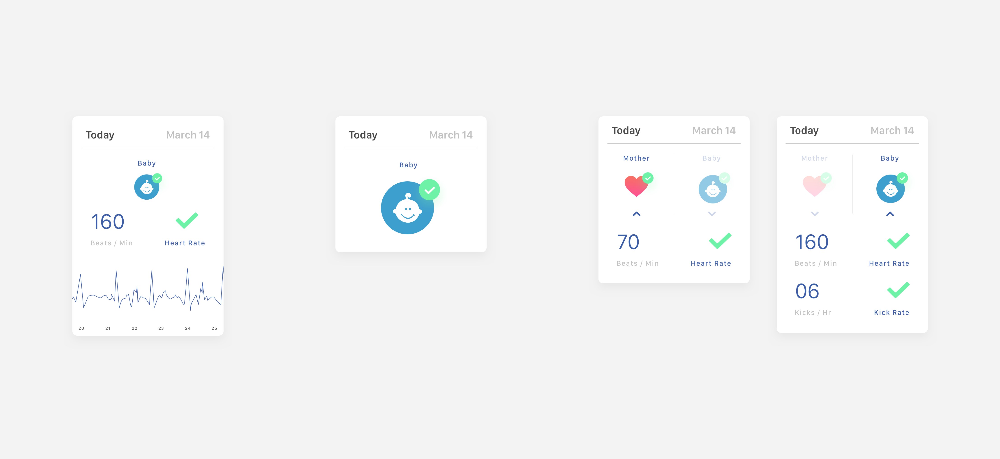

fetal monitoring for pregnancy
From August 2016 to Spring 2017, I conducted design research on the Samsung Beyond Smartphones team, helping envision the future of AR/VR, wearables, medical devices, and iOT.
We created a hardware and software solution that helps pregnant mothers and doctors monitor fetal heart rate. I primarily worked on the UX for the software app, analyzing needs for both pregnant parents and doctors and translating them to wireframes and user flows.
The fetal heart rate monitoring belt tracks real-time data to provide parents peace of mind and doctors detailed information.
Role
Goals
User Research
Designing for Pregnancy
Through ethnographic research and observational studies, we found that pregnancy was a time of anxiety for many parents. We read up on FDA regulations, talked to nurses, interviewed doctors at UCSF, and asked mothers what their needs were.
As a current pregnant woman who suffered a miscarriage, the ability to safely monitor heart rate and movement would be wonderful.
Mother
The worry that my fetus/baby is okay can be a bit of a struggle between doctor appointments sometimes, and having some way to monitor things would be great!
Mother
Doctors are human too, they can't always be on-call.
Labor & Delivery Nurse
Problem
We approached solving these pain points in three main ways:
Ideation
We generated over 450 concepts. Through needs analysis and concept clustering, we settled on the concept of Fitbit for Embryos. The fitbit for embryos would involve a stretchable, wearable belt for pregnant mothers to wear. Electrodes in the belt provides detailed data on the baby to parents and doctors via a companion software app. Our team split in two to tackle both the hardware and software aspects.
Competitive Analysis
To get an idea of adjacent solutions, the software team first conducted an audit of 20 pregnancy apps. We found that many focused around helping parents keep track of kick counts, providing relevant pregnancy literature, and informing parents of their baby's development via fruit sizes.
Wireframing
Whiteboarding
We used Figma to build mid-fidelity wireframes.
By working in low and mid fidelity, we were able to quickly generate concepts for user feedback.
Solution
After wireframing, we created an InVision prototype for testing and iterating. Based on our feedback, we came up with a final app solution that involves three main components: real-time fetal monitoring data, memory keeping, and doctor communication.
Real-time Fetal Monitoring Data
Different ways we considered displaying data, from extremely detailed to very limited.
One key design decision we kept returning to was what data to show parents. Parents were divided on the issue, with some wanting more data while others expressed concern about having too much information.
I actually don't want to know that much information regarding my baby because it would stress me out. I want to go about my job without having my baby's status constantly on my mind.
Aileen, teacher and mother of 3
I know some moms express concern about this but I would love if I could easily check my baby's heart rate. Not as a diagnostic if I think something is wrong, more just for the fun of it.
Willa, mother of 2
I would be concerned giving parents that sort of information. With ECG charts, data can be very complex and require professional interpretation. That sort of information would stress patients out unnecessarily.
Doctor at UCSF
Fetal heart rate isn't enough to determine a baby's condition. There are many factors at play, so we encourage mothers to keep track of other factors like kicks and movement instead.
Nurse at Lucille Packard Children's Hospital
The data display we ultimately settled on.
To address this conflict, we decided to provide parents limited data when it came to sensitive metrics like fetal heart rate, but detailed data when it came to metrics like the mother's heart rate, the baby's position, levels of amniotic fluid, or kick counts. In this way, mothers can feel a sense of connection with their baby and 'check up on them' while not being overwhelmed by all the minutae of fetal heart rate monitoring. With information on the mother as well, mothers can also make sure they're staying healthy.
Memory Keeping
While parents were hesitant to monitor their baby's data in a diagnostic sense, they did want to document their pregnancies. We therefore added Calendar View and Story Mode.
During my first pregnancy I would be really excited whenever my baby kicked, and would immediately share it with my husband. With later pregnancies, I got too busy to really keep track and document them. I wish I did keep better track though.
Aileen, mother of 3 girls
Data collected by the belt is documented on a calendar.
Calendar View helps parents look back on their pregnancies in detail.
We took a page from other pregnancy apps and used fruit as a way of tracking a baby's development.
Story Mode provides a more holistic overview designed for sharing, functioning how a scrapbook does in real life. It captures the reminiscent and emotional needs of parents. We kept our sharing options limited to SMS, messaging, and email as mothers told us that privacy and sharing with an intimate circle of family and friends was a priority for them.
Ideation on possible ways of displaying memories.
We explored different ways to convey and display memories. We found more possibilities in logging digitally (such as videos, audio recordings, location check-ins). However, the analogy of a "story" and "scrapbook" appealed to parents. To maintain the emotional draw of a "story," we drew inspiration from the scrapbook medium when designing our UI. For example, people can customize their captions and add stickers to their entries.
Doctor Communication
We learned through our interviews that mothers with smooth pregnancies generally only met monthly with doctors. If they had other questions during the pregnancy, they usually had to rely on online sources or books. However, women felt these weren't always reliable and sifting through information for accurate points was a pain point.
Sometimes I'd be worried about small things that I wasn't sure was a big enough deal to go in for a checkup. Reading books helped me figure out if the random abdominal pain I felt was normal or not.
Aileen, mother of 3 girls
I wish I could just ask Siri if something is safe for pregnant women to eat/take/use and get a straight yes or no answer. I had no idea when I started this that I was not supposed eat hummus. What the hell?
Barbara
I like all the articles about babies on apps, but I wish they were more scientific and at a higher reading level....Women like peer reviewed articles too. Even pregnant women.
Barbara
To answer these concerns, we designed a chatbot that drew exclusively from medically approved sources and allowed parents to quickly access the answers they needed.
Parents can ask the chatbot to find articles from approved sources.
If a mother had additional questions, they could ask to contact a live physician. If the physician needed more data, the mother could also send over supplementary information from the hardware tracker. While our tracker wouldn't be enough for a medical professional to form a diagnosis, it would supplement the existing process of self-reporting by being an additional source of information if mothers were uncertain.
While I try to monitor kicks and movements myself, sometimes it's just not that easy and I find myself worrying that I haven't felt anything in a while. In reality it's because I've been busy or moving around so I just haven't really noticed the baby.
Sam, pregnant mother with a toddler
Reflection
It was a challenge juggling different stakeholders in a specialized and high stakes context that I didn't have much prior knowledge in. However, this ultimately pushed me to research extensively, listen carefully, and consider the user at every point.